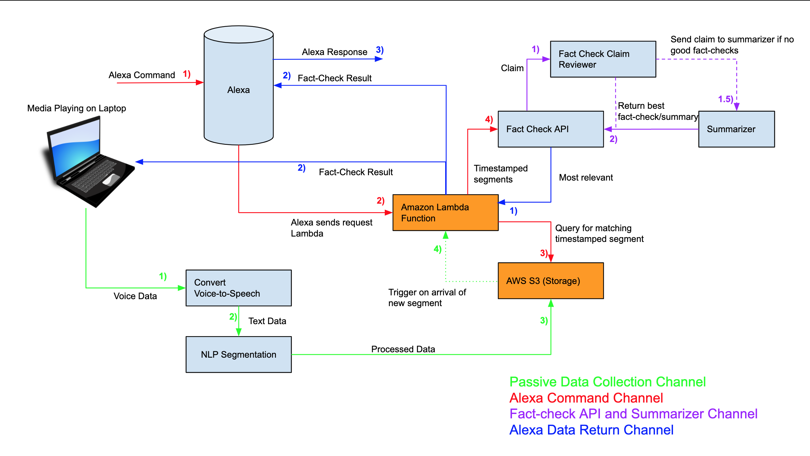
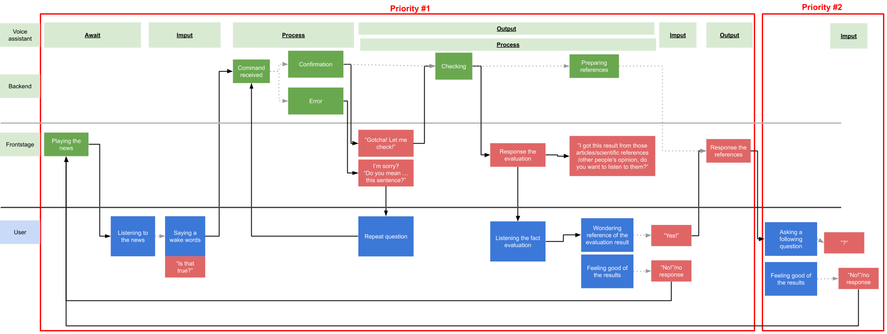
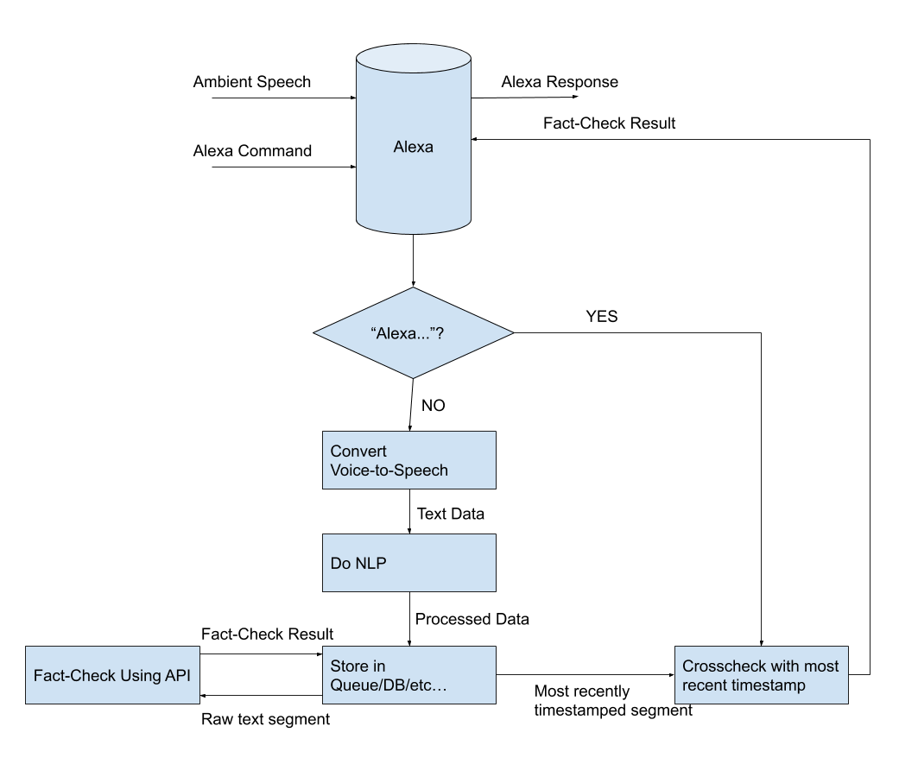
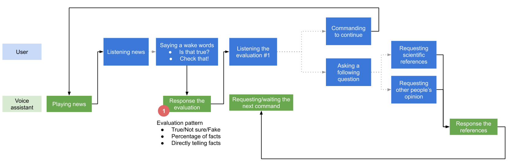
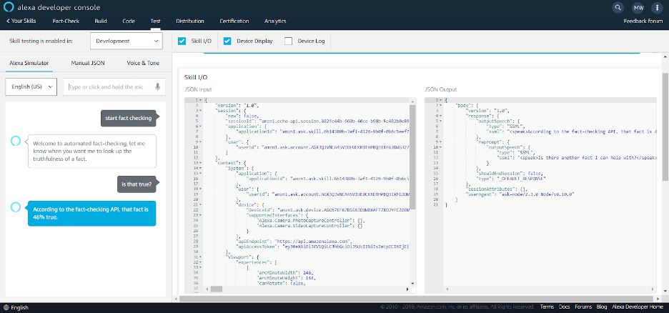
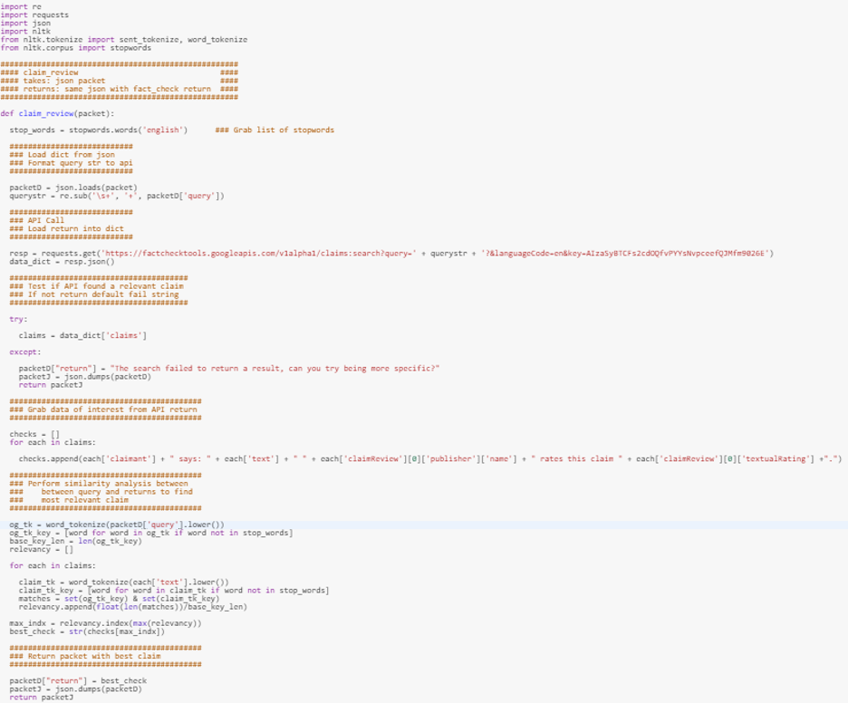
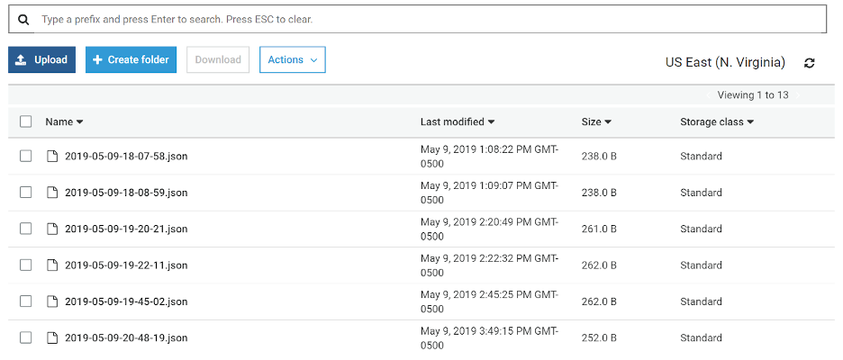
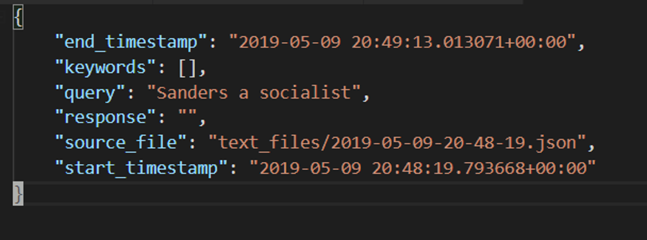
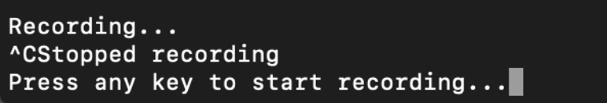

Team Nifty: Nadeem Patel, Clarissa Qain, David Nelson, Siqi Chen
Team Prime: Alexis Baudron, Michael Benimovich, Faye Yifei Gong, Matthew Wang
Faculty & Staff Leads: Kris Hammond, Zach Wiseman
What is it?
Coming across accurate information while watching the news or a YouTube video may not always be true. Automated Fact Checking utilizes Alexa and Google Fact Check API in order to provide verification while capturing information during real time.
Before going into this project, "the goal would be to provide factual verification of the news as it is presented that supports further questions about the context (history, alternative points of view, evidence, etc.) of a news story and/or quote. The challenge would be to provide immediate access to the facts in real or semi-real time."
How It Works
This tool focuses on fact checking information during live time. It works by listening for a specific amount of time, converting the audio to text, extracting keywords from text, packages this in a custom object (timestamped) and sends it to S3.
The primary source of fact checking is the Google Fact Check API. If this API fails to return a relevant claim review, the claim gets sent to the summarizer. The summarizer then scrapes the internet for web pages with relevant content, scrapes the pages and returns a two sentence summarizer to provide additional information on the claim.
Process Architect / Pipeline

User Flow

The Process & User Testing: Changes to the pipeline and adjustments to UX/UI
The project was split between two groups, Nifty and Prime. My team, Nifty, and I began with the goal of developing a Chrome extension that fits the planned architecture that Prime would design. We decided that an existing API would work best since it would be a lot faster and much more reliable than what we would develop in 10 weeks. The goal was not to take the speech to text transcription and put it into the fact-checking API. The extension would be used for the fact-checking API. A higher level goal was to have transcriptions timestamps so Prime can use that feature for the fact-checking API. One of Prime's initial goals was to determine the user architect and define the major components. This meant compartmentalizing the functionalities, determining the best frameworks and tools that will build each component, draw out a diagram and research two possible implementation options for every component. They needed to narrow down the implementation components by understanding the needs and constraints of our application, understand the core goals and the most important functionalities of the application. Part of this process also meant deciding the tradeoffs between various implementations.
Initial Process Architect / Pipeline

Both teams worked together on user interviews, testing and implementing feedback into the user interface. Nifty began by looking into different kinds of content that is generally consumed and tried to understand the mis- and disinformation that can be associated with the content. Part of carrying out this research was figuring out how people experience fact-checking when it comes to different products, formats and contexts. During this phase, we also began developing and testing different fact check formats that could automatically appear on social networks. The end game was to implement all these ideas and initiatives across all aspects of our work. Nifty also looked into previous experiments, applications and studies regarding fact-checking.
Prime wrote out a guide to begin user interviews, drawing questions around fake news, technical thoughts about such a tool (benefits, drawbacks, impact, functions, thoughts) and interaction (current ways of fact-checking). A scenerio was also made to learn how users interact with Alexa when listening to a podcast or watching television (asking Alexa questions, asking follow-up question based on Alexa's response). Working with Prime, Nifty also began interviewing people with a focus on voice user interface — voice interaction (voice assitance), fact-checking (news consumption habits, sources, value of authenticity) and user flow (expecations of functionality and results).
Discussion Guide V1
Initial User Flow

Prime started to design the pipeline. The backend of the pipeline was designed to have a lambda-API endpoint, automatic building of the lambda function for easy code updates and lambda trigger on new text file upload to sort the incoming file by timestamp in the S3. Using other storage methods such as dynamoDB for efficient sorting was also being considered for the backend pipeline at this point. Prime also looked to define test function queries and configured the Alexa Skills with the AWS lambda endpoint.
At this point, Nifty continued to focus on the Chrome extension that uses a speech to text API. The secondary goal was to have a working API that is efficient, so the team settled on Google API after moving away from the Amazon API. Nifty was able to run the API on flask with a Python file and an audio file, the Chrome extension was needed to generate the audio file and call the Python file. Then, the output would be placed into an AWS bucket for processing and fact-checking.
Voice user interface design was a new task for both teams, so Prime looked into VUI design and worked on creating a proper plan. The team's research also consisted of actually understanding VUI design, including how it is different from "traditional" web design. The research would provide insight into who and where the user is as well as understand the entire communication process between the system and the terminal device from beginning to end. Prime looked into various voice interaction designs, user flow design key points and designing error strategies. This initial plan consisted of having a real-time check popup and notification sound while playing audio. User needs and insights would simply come from finding and interviewing voice assistant users. The team also drew out a plan for usability testing that would provide results to analyze.
VUI Design Plan
After setting the initial goals and some planning, the Prime team focused on developing the full pipeline, including the AWS backend to integrate the fact-checking API, trigger on POST to S3 bucket and distribute keys for S3. The assembling also consisted of including common interfaces for data as well as making sure the fact-checking API worked as expected through unit testing and looking at the returns from the API. Prime also looked into Alexa Skills to see how it triggers on lambda and worked to pass a timestamp that represents the time of query.

Screenshot of Alexa Skills console

Screenshot of fact-checking API code. Includes endpoint with Google Factcheck Explorer, as well as simple NLP to determine best articles in the list using a word-match heuristic
Nifty continued to work with the Google Chrome extension to figure out how to use it with the speech to text API and also figure out how to implement timestamps for transcriptions. The team was looking to improve the integration of speech to text API and have the fact-checking API work efficiently in the pipeline.

Screenshot of S3 bucket with timestamped elements inside
An issue Prime came across was dealing with the microphone input and recording. The recording bagan when the user wants by using a key input, but the only way to stop was by using a force CTRL-C. This stopped the whole program, so Prime needed to work on a continuous implementation. The team considered using hotkeys or stopping it once the user gets the first good packet. For the lambda API, the team worked on error handling and API distribution, including figuring out inconsistencies in the calls being made. Prime also looked to format the data by transferring to Python dataclasses for clear template of the interface and be able to encode or decode a packet. When it comes to Alexa Skills, the team wanted to finish the Alexa console with the lambda endpoint so they can make requests to the fact-checking API, parse the result and have Alexa say it.

Format of the json packet being passed around the pipeline
The Prime team wanted to provide users with a simple summary of related information when fact-checker fails to return a good response by scraping the web for information and returning a summary of one or two sentences. Part of this process was also determining where the cutoff for a good response occurs for the API return (determine what percent results in a fail and leads to a summary). Another factor to consider was determining what sentences should be scraped in the summary, so they considered aspects such as weighting of words in the query, scope of the article being scraped and how it influences sentence weights, selecting the best article from search and more in-depth sentence-relation analysis using properties of sentences (e.g. Does it answer the query, provide more insight or simply uses similar language?). At this point, Prime was also ready to begin running video examples on the API pipeline, so the team focused on finding an example that was successfully answered by the fact-checker, one that failed with a good summary and one that failed with a bad summary.
During this part of the process, Nifty decided to move away from the Chrome extension and enhance the results feature. In order to improve the results that are returned to the questions asked, Nifty decided on using several fact-checking APIs. Moving away from the Chrome extension allowed the main purpose of the project to be more approachable, and this approach would be more accurate and reasonable based on word extraction.
Nifty was working on compiling APIs, but it was unlikely the team would reach the point that the APIs would be part of the pipeline by the end of the quarter. The main focus was to finish immersing the fact-checking API.
Nifty desgined the Chrome extension using feedback on VUI and UI. The wireframe was based on the idea that the application should not interrupt the work flow too much, does not take up too much screen and is foldable, a small chunk of core information is provided at a time by the voice assitance unless asking follow-up questions and the voice assitance should give short answers with deep information on the UI. Information priority consisted of who did the fact-checking, the result of the fact-checking, the source information used and who produced the information. Also, this priority included follow-up questions about the source information, link to the fact-checking aritcle and source information as well as relative news.
VUI User Interviews 2 (samples)
Towards the end of the process, the Prime team set out to make necessary changes or improvements to the audio input (microphone recognition), the server side in terms of context sorting files, the fact-checking API and summarizer while also refining Alexa Skills.

Code and screenshot of stopping the process that will prevent user from restarting each time they want to ask a question (a problem Prime dealt with earlier in the process)
Nifty was having issues with the speech to text API and its lack of ability to pick up some words. The fact-checking API was also not as accurate as the team wanted at this point. Nifty decided to use several APIs together, but the word extraction still needed improvement, so the function had to be rewritten. However, the measurable goal was not to have completely accurate APIs — we simply needed something that worked well enough to be a reliable tool. Another reasonable goal Nifty was trying to reach was to determine when to stop and how to stop between sentences, which was difficult. The team had to figure out when the speech to text API will stop before the text file is used by the fact-checking API. Nifty set out to enhance the pipeline that was put together to maximize the number of times with the best results. The aim was to have an end-to-end pipeline that does not break down due to inaccuracies or lack of proper conversion from speech to text. It was unlikely that the compiling APIs would be implemented since that did not need to be part of the pipeline right away. However, we were looking to improve the ways the fact-checking results were derived as well as the speech to text API functions.
After testing the VUI and UI mockups, Prime iterated the mockups to version 1.2 and updated the user flow based on the testing feedback. The final Chrome extension UI key features included: confirm fact-checking content and highlight referred sentences, show loading status while doing fact-checking, difference between user's voice command input (black border, yellow content) and AFC result content (grey background, blue content), show fact-checking benefits by showing weekly usage.
Prototype v1.2
What's next?
Future improvements to consider are better speech to text translation and segmentation, having keyword-based searching of text segments in lambda and better heuristics for determining relevance in the fact check API and the summarizer. Developing Chrome front-end that is ready to connect with the back-end is also essential moving forward.
"The Northwestern University Knight Lab is a team of technologists and journalists working at advancing news media innovation through exploration and experimentation."